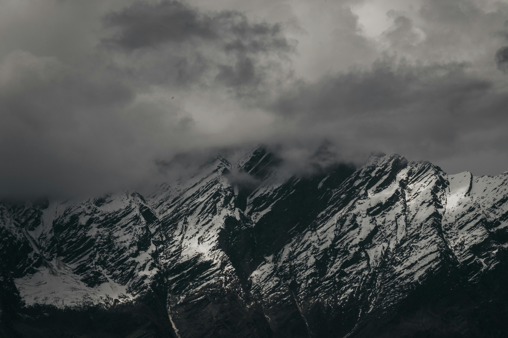

Himachal Pradesh
Himachal Pradesh is known for its stunning mountain landscapes, charming hill stations, and serene monasteries.

Manali
Manali is a popular hill station known for its scenic beauty, adventure sports, and tranquil atmosphere.

Shimla
Shimla, the capital of Himachal Pradesh, offers colonial architecture, beautiful hill stations, and a pleasant climate.
1. Popular Tourist Attractions
Hill Stations
- Shimla: The capital of Himachal Pradesh, known for its colonial architecture and scenic beauty.
- Manali: Famous for its adventure activities, beautiful landscapes, and as a gateway to Leh and Ladakh.
- Kasol: A charming village in the Parvati Valley, ideal for trekking and enjoying nature.
Monasteries and Temples
- Hidimba Temple: A famous temple dedicated to the goddess Hidimba, located in Manali.
- Great Himalayan National Park: A UNESCO World Heritage site, offering trekking and wildlife experiences.
- Rewalsar Lake: A sacred lake in the Mandi district with Buddhist monasteries and Hindu temples.
Adventure Activities
- Trekking: Himachal Pradesh offers some of the best trekking trails, including Triund, Hampta Pass, and Pin Parvati.
- Paragliding: Bir Billing is one of the most famous spots for paragliding in the world.
- Skiing: Solang Valley and Narkanda are popular skiing destinations in winter.
Cultural and Historical Attractions
- Kangra Fort: A historic fort in the Kangra Valley with panoramic views of the surrounding area.
- Manikaran: Known for its hot springs and pilgrimage sites for Sikhs and Hindus.
2. Cuisine
- Dham: A traditional Himachali feast typically consisting of rice, lentils, and vegetables, served with chutney.
- Chana Madra: A curry made from chickpeas and yogurt, usually eaten with rice.
- Sidu: A type of steamed bread, often served with ghee and lentils.
- Kadhi Chawal: A spicy yogurt-based curry, often served with rice.
3. Festivals
- Losar Festival: Celebrated by the local people, marking the start of the new year in Himachal Pradesh.
- Shivratri: Celebrated with great fervor in the temples across the state, especially in Mandi and Chamba.
- Kullu Dussehra: A unique festival where people from all over the world gather to celebrate the triumph of good over evil.
- Minjar Mela: Held in Chamba, this is a major fair celebrating the harvest season and the region's cultural heritage.
4. Unique Experiences
- Trekking in the Great Himalayan National Park: Explore the rich biodiversity and scenic beauty of the park with a guided trek.
- Shopping in Kullu: Famous for its woolen shawls and handicrafts, Kullu offers a rich shopping experience.
- Attending the Kullu Dussehra: Participate in the vibrant celebrations of this festival, which features grand processions and cultural performances.